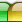
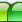
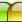
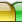
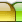

These are image-based tabs.
These tabs have additional settings, so selected tab looks like it was brought to the front.
This effect is achieved with the help of additional items with individual styles.
So, the structure of tabs looks like this:
Item1
separator Item2
separator Item3
separator Item4
Where
separator is the additional item, that creates bring-to-front effect.
Each
separator has 7 states:







For more details see
parameters info.